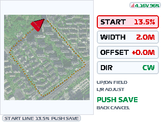
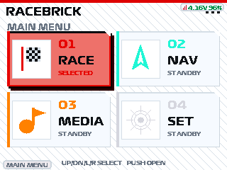
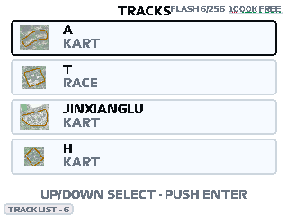
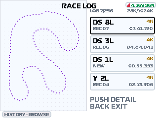

RaceBrick 是一块为赛道而生的掌上数据终端。GNSS 25Hz 计圈、赛道录制、卫星图叠加、全圈 Race Log、蓝牙媒体控制与导航，一块屏幕全部完成。

GNSS UTC 计时，实时 Delta、最佳圈与分段；起始线支持位置、宽度、左右偏移与方向设置。
轨迹与卫星图配对显示；手机同步卫星图到设备，无网络时仍可显示本地轨迹。
完整圈叠加，单选一圈标出最高速位置；绿/红色显示加速与刹车点，支持 RaceChrono CSV v3 导出。
中文歌名 / 歌词、专辑封面色、蓝牙媒体按键；导航、GPS 与 BLE 画面在后台持续工作。
全部操作都在设备上完成。方向键选择，PUSH 确认；赛道设置会持久化，下一场 Recorded Track 直接使用。


